XX век
Водонапорная башня
Здесь Арзамас входит в XX век: вода, инженерия и общественный запрос сходятся в одной точке.
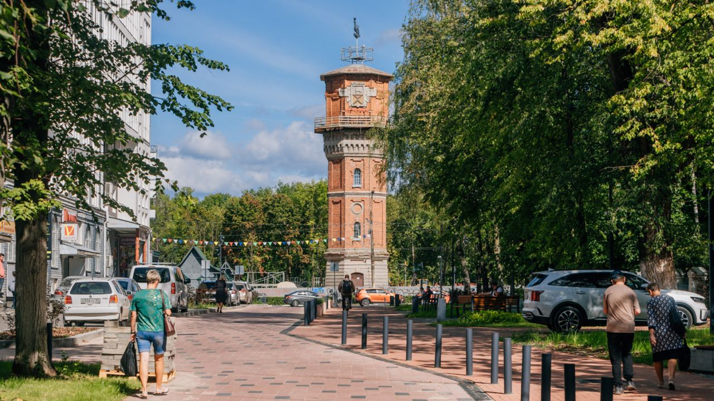
Наше путешествие по улице К. Маркса начинается с начала XX века. Сегодня трудно представить город без воды в кране, но сто лет назад Арзамас жил совсем иначе.
До строительства водопровода воду брали из колодцев, рек и родников. Летом источники мелели, весной вода мутнела, а её качество напрямую зависело от погоды. Воду носили вёдрами, запасали, экономили. Для торговых лавок, мастерских и бань это была постоянная проблема. Для горожан — вопрос гигиены и здоровья. Город рос, а старая система водоснабжения уже не справлялась.
Неудивительно, что к началу XX века появился общественный запрос на решение. Более 350 домохозяев подписали обращение в городскую думу с требованием устроить водопровод. С таким же предложением выступали ремесленники. Вопрос воды стал общим делом — не частной инициативой, а необходимостью для всего Арзамаса.
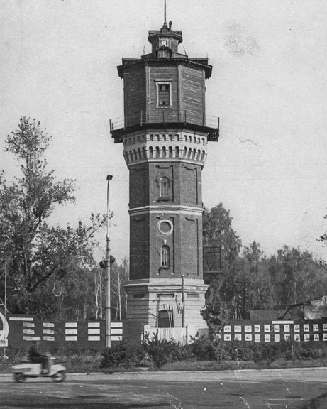
И вот в 1911 году на северной окраине тогдашней Сальниковой улицы выросла водонапорная башня — пятиярусная, восьмигранная, в кирпичном стиле. Внутри — резервуар на 16 тысяч вёдер воды. Отсюда по чугунным трубам вода расходилась по главным улицам. Давление — 5,5 атмосфер. Были устроены водоразборные места, введены водомеры, установлена плата за каждое ведро. Вода отпускалась по талонам, а у колонок дежурили сторожа.
Город учился жить по новым правилам: учитывать ресурсы, платить за потребление, доверять инженерной системе.
Но за этой системой стоял человек.
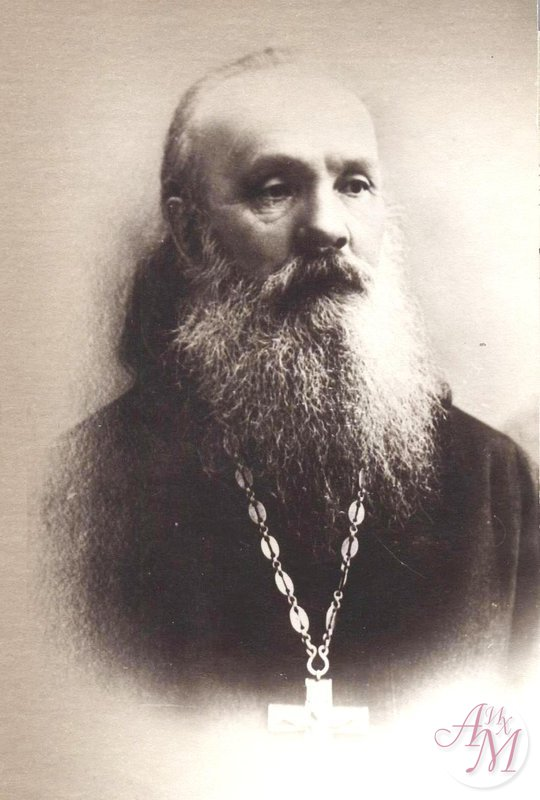
Протоиерей Фёдор Иванович Владимирский почти двенадцать лет исследовал источники Мокрого оврага, очищал родники, строил плотины и создавал систему водосбора. Его называли упрямцем и мечтателем, но именно такие люди меняли город. Он вкладывал личные средства, убеждал власти, доказывал необходимость проекта — и в итоге довёл дело до конца.
В 1902 году в Арзамасе оказался в ссылке Максим Горький. Он познакомился с Владимирским и был поражён его энергией и верой в человека. Так, на одной улице пересеклись инженерная мысль, общественная инициатива и литературная история.
Башня переживёт пожар 1982 года, реконструкцию и взрыв 1988 года, будет отключена от системы в 1971-м. Но, проходя по улице К. Маркса, мы всё ещё видим знак того момента, когда Арзамас вступал в XX век — через воду, труд и настойчивость.
XX век
Ремесленное училище
Если башня дала городу воду, то ремесленная школа — специалистов.
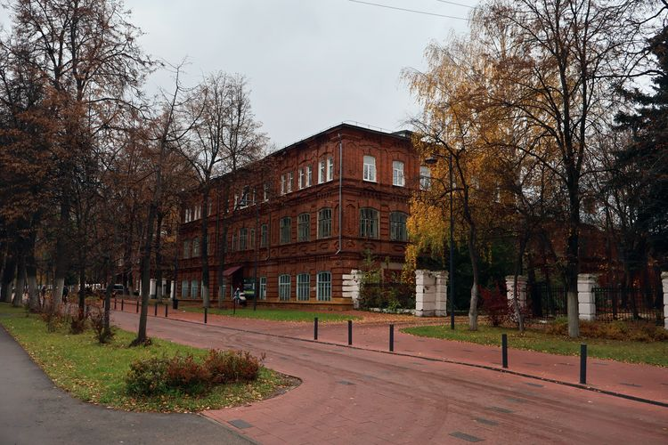
Продвигаясь дальше по улице К. Маркса, мы оказываемся в том же XX веке — но уже не у водонапорной башни, а рядом с другим символом развития.
Если башня дала городу воду, то ремесленная школа дала ему специалистов.
Арзамасская школа ремесленных учеников была учреждена 11 марта 1902 года и открыта в июле 1903-го. Это было профессиональное училище нового типа: здесь готовили столяров, кузнецов, слесарей — тех, кто умел работать с деревом, металлом и механизмами.
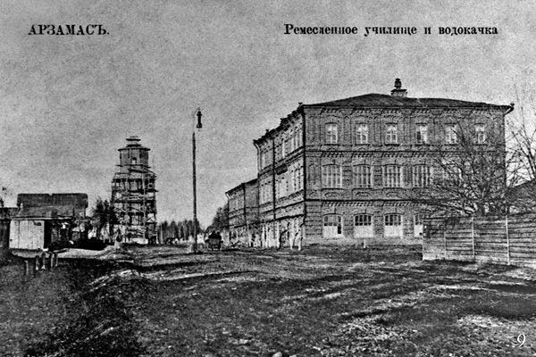
Первый набор — 40 учеников. Возраст — от 12 до 18 лет. Большинство — дети крестьян, мещан, ремесленников. Они приезжали не только из Арзамаса, но и из окрестных сёл. Для многих это был шанс получить не просто навык, а профессию.
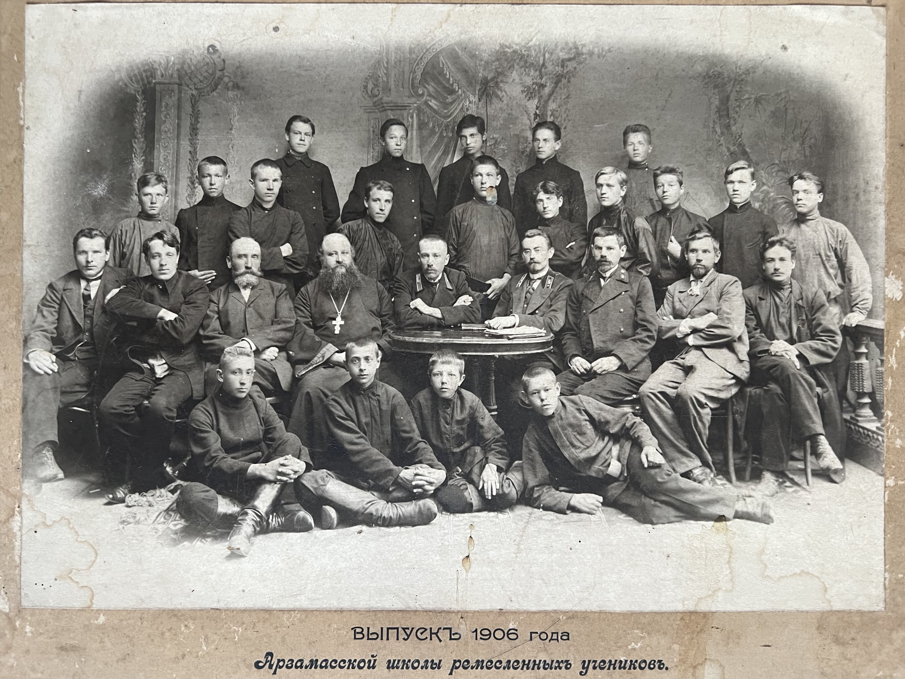
Обучение сочетало общеобразовательные предметы — русский язык, арифметику, геометрию, историю, физику, черчение — и специальные дисциплины: технологию дерева, металла, токарное и кузнечное дело. В 1909–1910 учебном году начала работать литейная мастерская. Для неё выписывали оборудование из Москвы, Нижнего Новгорода и даже Варшавы.
Школа не просто учила — она работала. Мастерские выполняли заказы, в домах и учреждениях города появлялись вещи, сделанные руками учеников. Во время Первой мировой войны здесь изготавливали военные заказы: чугунные снаряды, подковы, ящики для боеприпасов. Ученики, подлежавшие мобилизации, получали отсрочку — их труд был нужен обороне.
Город рос. Планировалось развитие железнодорожного сообщения. Сельская округа нуждалась в ремонте и производстве земледельческих орудий. Арзамасу были нужны не только идеи, но и мастера.
В 1917 году школа была преобразована в низшее механическое училище по сельскохозяйственному машиностроению, позже — в профтехшколу. Так началась история учебного заведения, которое со временем вырастет в техникум и колледж.
Здесь XX век приобретает звук молота, шум токарного станка и запах свежеструганного дерева.
XIX век
Улица ремёсел
Здесь важны детали: деревянные дома, наличники, рука мастера и «автограф» ремесла.
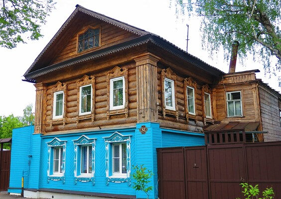
Продолжая путь по улице К. Маркса, мы начинаем замечать не только крупные здания, но и детали. Деревянные дома, флигели, дворы, заборы — всё это не просто фон, а результат труда ремесленников.
В XIX веке Арзамас был городом мастеров. Здесь процветали кузнечное, экипажное, шорное, скорняжное ремёсла. Работали кожевенные заводы, иконостасные мастерские, плотницкие артели. Арзамасские резчики и позолотчики были известны далеко за пределами губернии — их приглашали работать в Казань, Вятку, Нижний Новгород. Ремесло передавалось из поколения в поколение: кровельщики из Выездной Слободы, плотники южных сёл уезда, лепщики из Пушкарёвки.
Идёшь по улице — и понимаешь: эти дома построены не безымянными строителями, а людьми с профессией, школой и характером.
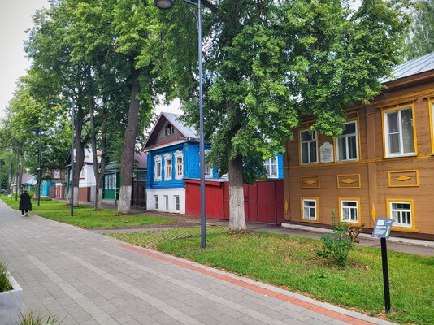
В середине XIX века появляются усадебные дома, которые сегодня можно рассмотреть на примере домов 44, 43, 52 и многих других по улице К. Маркса. Когда-то это были купеческие и мещанские владения с амбарами, ледниками, банями, садами. В доме № 44 в 1880-х годах художник Шмидт устроил иконописную мастерскую — и это логично для города с 33-мя церквями, где резьба и церковное искусство были доведены до уровня настоящего мастерства.
Но главное украшение этих домов — наличники на окнах.
Наличник возник как функциональная деталь — он закрывал щель между стеной сруба и оконной коробкой. Однако очень быстро превратился в главный декоративный акцент фасада.
Конструктивно наличник состоит из нескольких элементов:
- лобовая доска (очелье) — верхняя часть, своего рода «чело» окна
- карниз (сандрик) — выступающая часть над лобовой доской;
- боковины (стойки) — вертикальные элементы по сторонам окна
- подоконная доска — нижняя часть обрамления.
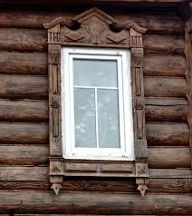
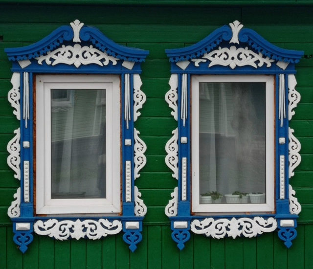
Именно верх — «чело» — чаще всего становился главным местом для орнамента.
В развитии наличников можно увидеть целую историю стилей. Сначала это были простые гладкие доски с глухой выемчатой резьбой: ромбы, уголки, защитные знаки. Позже, с распространением пилы и столярных инструментов, появляется пропильная — ажурная, кружевная, будто деревянное кружево.
Существуют два основных типа декора:
- глухая (выемчатая) резьба — орнамент вырезается в толще доски
- пропильная (ажурная) — узор прорезается насквозь, создавая игру света и тени
В конце XIX — начале XX века наличники становятся особенно разнообразными. Появляются элементы классицизма (полуколонны, пилястры), барочные завитки, растительные мотивы, даже зооморфные изображения.
Наличник — это своего рода автограф мастера. По форме карниза, характеру завитка, плотности орнамента можно понять, в какой среде он создавался: в купеческой, мещанской или более скромной ремесленной.
XVI–XVII века
Крепость
Под ногами — бывшая линия рва и крепости. Здесь Арзамас был пограничным городом.

Продвигаясь дальше по улице К. Маркса, мы выходим к скверу. Сегодня это спокойное городское пространство. Но именно здесь когда-то проходила граница Арзамасской крепости — деревянного кремля XVI–XVII веков.
Инсталляция «Пролом» в сквере — это не просто арт-объект. Это напоминание о тех самых «проломных воротах», устроенных в XVII веке в восточной стене крепости. Идёшь по современной улице — а под ногами когда-то шёл ров, стоял вал и поднималась дубовая стена.
Во время похода на Казань в 1552 году царь Иван IV Грозный прошёл через эти земли и оценил их стратегическое значение. Высокий мыс между Тёшей и оврагами позволял контролировать переправы и дороги, ведущие на юг и восток. Именно тогда возникла идея создать здесь опорный пункт — крепость, которая закрепила бы власть государства на новых рубежах.
После взятия Казани началось активное освоение южных территорий, однако опасность набегов из степей сохранялась. Поэтому решение о строительстве укреплённого города оказалось не временной мерой, а частью государственной стратегии. Так на высоком берегу Тёши появилась Арзамасская крепость — военно-административный центр края
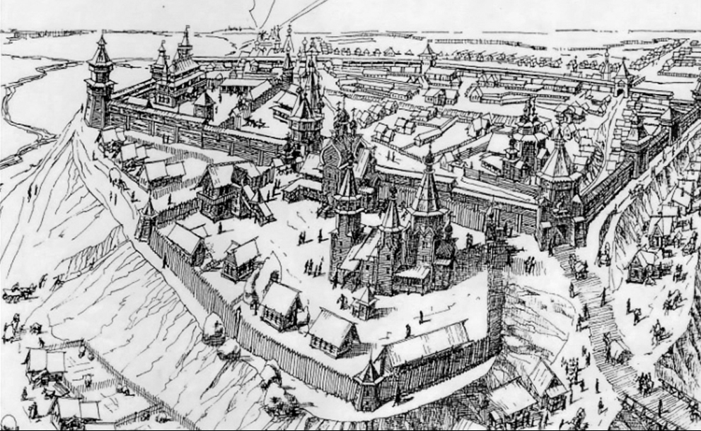
Крепость имела форму неправильного треугольника, продиктованную рельефом: высокий мыс между рекой Тёшей и оврагом речки Сороки. Периметр стен составлял около 2350 метров. Башен было одиннадцать, позже — двенадцать, четыре из них — проезжие: Стрелецкая, Кузнечная, Настасьинская. Восточная сторона первоначально ворот не имела — именно здесь позже появился «пролом».
В южной части кремля с момента основания находилась церковь во имя Архистратига Михаила. Позже на её месте был возведён деревянный, а затем каменный Воскресенский собор — один из главных символов города. Получается, что духовный центр Арзамаса вырос буквально внутри крепостных стен.
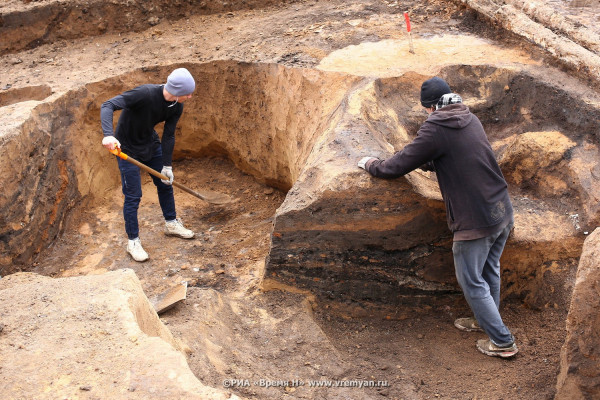
Долгое время сведения о кремле существовали лишь в письменных источниках. Но во время реконструкции ливневой канализации в исторической части города археологи впервые обнаружили ров крепости. Были найдены участки мостовых, подполы построек XVIII века, следы пожаров, а на пересечении улиц К. Маркса и Ступина — церковное кладбище. Так археология подтвердила то, о чём раньше говорили только документы.
Арзамасский кремль ни разу не подвергался осаде, но играл важную роль как опорный пункт правительственных войск, в том числе во время подавления восстания Степана Разина. После пожара 1726 года деревянные стены уже не восстанавливались — город вышел за пределы укреплений и начал жить иначе.
Инсталляция «Пролом» словно открывает окно в тот момент, когда Арзамас был не торговым и не ремесленным, а пограничным городом.
XIX век
Купцы Подсосовы
Купечество — экономическая сила города: торговый размах, практичные решения и строгий классицизм.
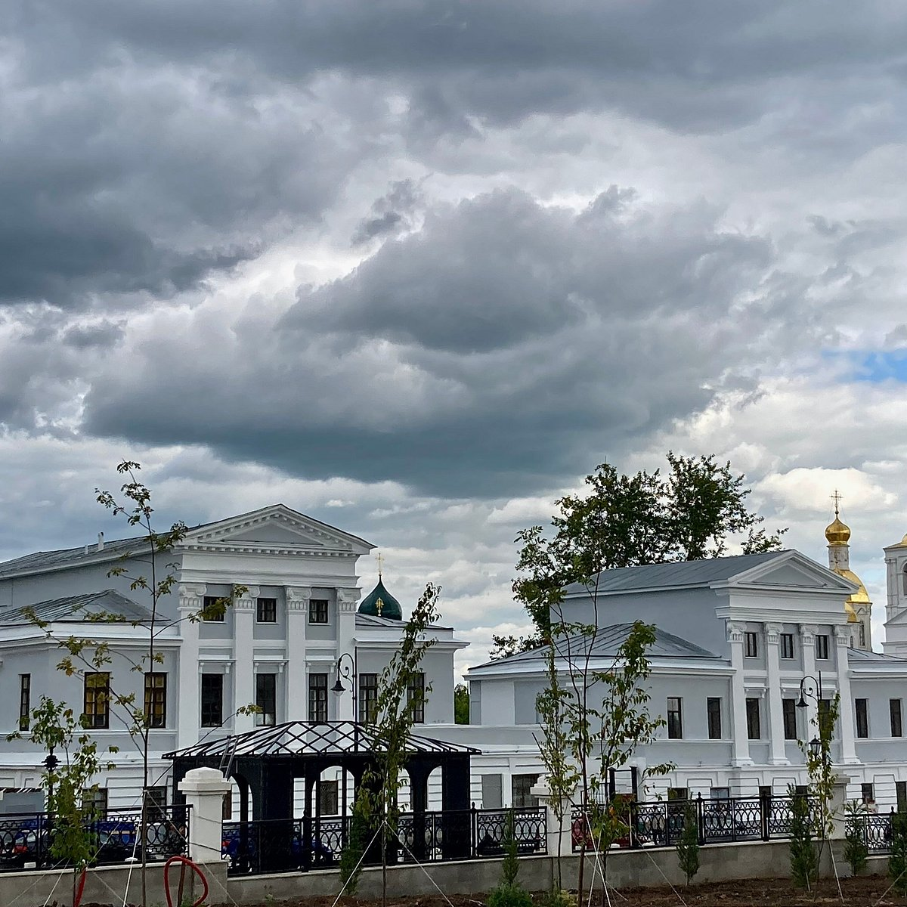
Если крепость была военным началом города, то купечество стало его экономической силой.
Период с 1775 по 1850 год называют золотым веком Арзамаса. Город оказался на пересечении крупных трактов: московский почтовый путь здесь расходился на юг — к Саратову и Пензе — и на юго-восток — к Симбирску и Оренбургу. Через Арзамас шли обозы с рыбой и икрой из Астрахани, товары к Нижегородской ярмарке, меха, кожи, холсты. Нижняя часть города кипела торговлей: более ста постоялых дворов, целые ряды кузниц, лавки, склады.
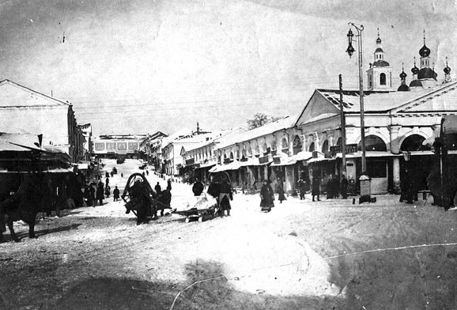
Арзамасские кожевенные заводы считались одними из лучших в России. Красная юфть — «булгара» — шла через Оренбург в Среднюю Азию, через Москву — за границу. В начале XIX века в городе насчитывалось до ста кожевенных заводов. Наибольшую известность получили заводчики Скоблины, Поповы, Цыбышевы и, конечно, Подсосовы.
Не хуже торговцев жилось и ремесленникам: кузнецы, каретники, шорники, скорняки, гладильщики при кожевнях, сапожники Выездной слободы. Целые семьи передавали ремесло из поколения в поколение. Именно в это время активно развивается церковное строительство — а вместе с ним плотницкое, каменное, резное и позолотное искусство.
Купцы становятся настоящими хозяевами города. Они занимают места в городской думе, жертвуют на школы, богадельни, больницы, строят храмы и каменные дома. Архитектурный облик Арзамаса во многом сформирован именно ими.
И одни из самых ярких свидетелей этого времени — дома-близнецы Подсосовых.
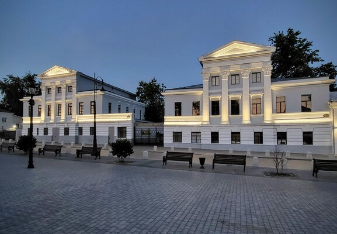
Усадьба была построена в 1820-е годы по заказу купца Ивана Васильевича Подсосова для его сыновей. С улицы дома выглядят почти одинаковыми — строгий поздний классицизм, симметрия, аккуратный декор. Но в этой «солидности» скрыта купеческая практичность: каменными сделаны только фасады, а боковые стены — деревянные. Закон о каменных улицах соблюдён, а расходы уменьшены.
Фамилия Подсосовых известна в Арзамасе с XVII века, но настоящий расцвет пришёлся на начало XIX столетия. Особенно выделился Пётр Иванович Подсосов — человек, которого в шутку называли «овчинным богом». В его руках сосредоточилась торговля овчиной — до 300 тысяч штук в год. Он вёл крупные сальные операции, имел кожевенный завод с одной из первых в городе паровых машин, отправлял товары в Петербург и за границу.
Подсосовы стали символом золотого века Арзамаса. Их капитал работал не только на торговлю. Пётр Иванович был городским головой, участвовал в общественных делах, жертвовал средства на строительство храмов, поддерживал благотворительные начинания. Именно купцы такого масштаба формировали городской облик — экономический и духовный одновременно.
Но история их семьи — это и история риска. Золотые прииски в Сибири, огромные партии сала, кредиты, зависимость от перевозок. Когда один из караванов застрял в пути, а цены на товар упали, последовало банкротство 1852 года — событие, потрясшее торговую Россию. Арзамас пережил этот крах как личную трагедию.
И всё же дома-близнецы остались. Они пережили купеческое великолепие, советский рынок, ресторан «Колос», пожар и реставрацию XXI века.
XVIII–XIX века
Воскресенский собор
Если торговля была силой, то храмы — благодарностью. Здесь город «собирается» в символ.
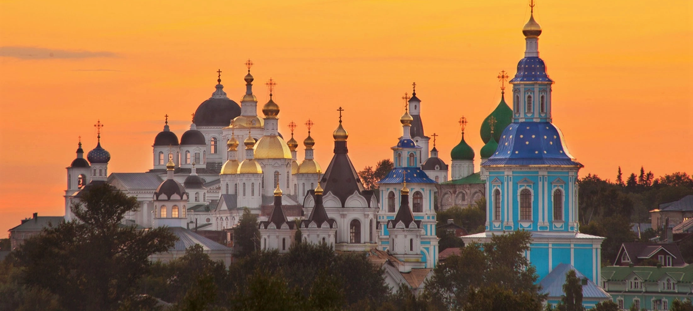
Купеческий Арзамас рос не только вширь — лавками, заводами, гостиными дворами, — но и ввысь.
«Я помню Арзамас с плетеными корзинами румяных крепких яблок и таким обилием похожих на эти яблоки, таких же румяных куполов, что казалось, этот город был вышит в золотошвейной мастерской руками искусных мастериц.»
В XVIII – первой половине XIX века в Арзамасе было построено более двух десятков храмов. Купцы жертвовали на их строительство огромные средства, воспринимая это не как роскошь, а как долг. Строительство храмов стало частью городского характера.
И главным символом этого времени стал Воскресенский собор.
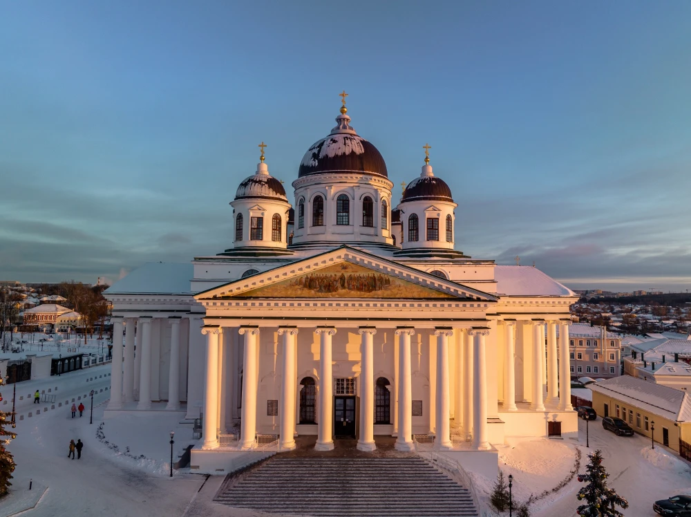
Когда-то на месте нынешнего центра города стояла крепостная церковь. По писцовым книгам 1620 года здесь уже существовал храм во имя Воскресения Христова. По преданию, первая церковь была заложена ещё во время Казанского похода Ивана IV Грозного в 1552 году.
Деревянный храм не раз перестраивался, горел, обновлялся. В 1726 году страшный пожар уничтожил значительную часть города, но собор на холме у берега Тёши уцелел — сгорела лишь крыша.
Но тот храм не был тем величественным сооружением, которое мы видим сегодня.
Храм в память 1812 года
Летом 1812 года через Арзамас проходили войска, везли раненых, прибывали беженцы из Москвы. Город жил тревогой и молитвой. После изгнания Наполеона жители решили воздвигнуть новый, большой собор — как благодарственную жертву за спасение Отечества.
В 1814 году состоялось всесословное собрание арзамасцев. Было решено разобрать старый храм и построить новый, «великолепный». Первой лептой стали так называемые «кормовые деньги» — компенсация за продовольствие войск. Но средств оказалось недостаточно.
И тогда город сделал невозможное:
- мещане внесли взносы «подушно»
- купеческие капиталы были обложены сбором
- по городу ходили с кружкой, собирая копейки
- брались займы
- жертвовали личные средства
Строительство продолжалось 28 лет — с 1814 по 1842 год.
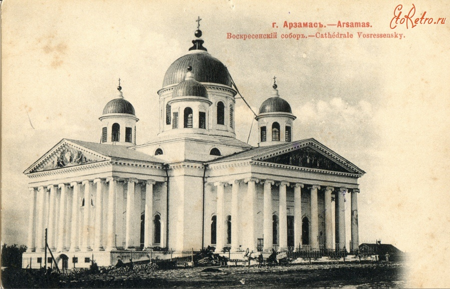
Архитектура и внутреннее убранство
Проект выполнил уроженец Арзамаса, архитектор Михаил Петрович Коринфский. Собор выполнен в стиле русского классицизма: монументальный кубический объём, четырёхколонные портики, пятиглавие, строгая симметрия.
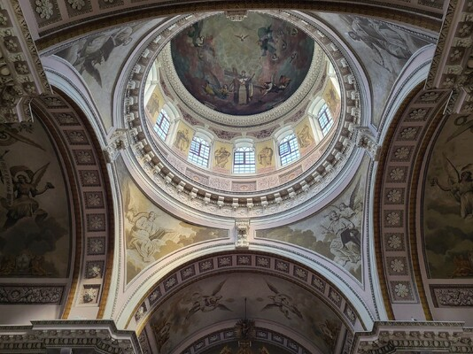
Внутри — единое, величественное пространство. Росписи выполнили ученики арзамасской художественной школы — Осип и Александр Серебряковы. Храм расписан «альфреско», по сырой штукатурке. Огромные композиции посвящены земной жизни Христа, и при всей академической манере они удивительно гармоничны.
Собор пятипрестольный. Первый придел — в честь Покрова Богородицы — был устроен на средства городского головы Петра Ивановича Подсосова. Так купеческая история города буквально вписана в стены главного храма.
15 сентября 1840 года состоялось освящение главного престола. Это стало крупнейшим торжеством в истории города.
XX век: испытания и возвращение
В 1932 году собор был закрыт. Планировался снос и строительство Дома Советов, но здание сохранили, создав в нем музейный архив.
В 1944 году храм был возвращён Церкви, службы возобновились. В последующие десятилетия проводились реставрации росписей и фасадов.
Сегодня Воскресенский собор — не просто архитектурный памятник. Это итог всего купеческого столетия, воплощённая благодарность, каменная летопись Арзамаса.
Мы прошли всего одну улицу. Она начинается в XX веке — с водонапорной башни, ремесленной школы, уверенности в инженерной мысли. Дальше появляются купеческие дома, строгие фасады, торговые истории, шум ярмарок. Ещё глубже — линия крепостного рва и место, где город только обозначил своё присутствие на высоком берегу Тёши.
Эти эпохи не сменяют друг друга, а наслаиваются. Под техническим прогрессом — купеческий расчёт. Под купеческими фасадами — ремесленная рука. Под всей городской тканью — крепостной фундамент. А над этим — купола, благодаря которым Арзамас иногда называют "городом церквей".
Одна улица удерживает всё сразу: оборону и торговлю, мастерство и веру, расчёт и щедрость. Город не распадается на века — он собирается из них.
Теперь из выбранных фрагментов складывается образ.
Какой Арзамас получился у вас?
Нажмите кнопку — и мы определим ваш Арзамас
Ваш образ
После выбора 6 пазлов здесь появится итоговый тип.
Заполните все 6 точек.